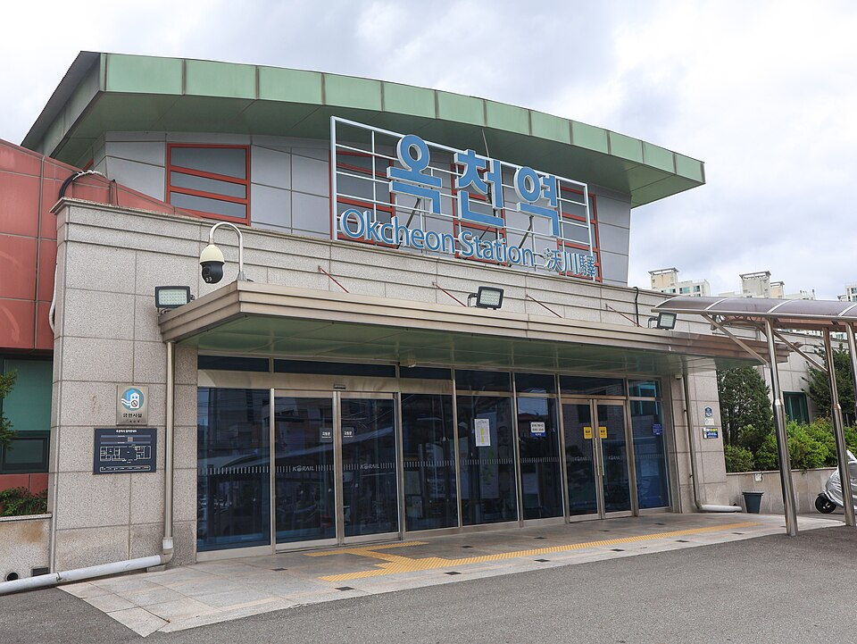

충북 옥천 검정고시 — 가까이 다닐 곳이 없을 때

지방에서 검정고시를 준비하시는 분들이 가장 먼저 걸리는 건 공부가 아니라 거리입니다. 집 근처에는 마땅히 다닐 곳이 없고, 큰 도시로 나가자니 왕복에 드는 시간이 수업 시간보다 깁니다. 그러다 "조금 더 여유 생기면" 하고 미루게 됩니다. 충북 옥천 검정고시를 그런 이유로 미뤄 두신 분들을 위해 정리했습니다.
왕복 두 시간은 수업 한 번보다 큽니다
주 2회 수업에 왕복 두 시간이면 일주일에 네 시간이 이동에 들어갑니다. 한 달이면 열여섯 시간, 과목 하나를 통째로 볼 수 있는 시간입니다. 게다가 시간만 드는 게 아니라 체력이 먼저 떨어져서, 정작 앉았을 때 집중이 안 되는 경우가 많습니다.
이동 자체가 부담이면 횟수를 줄이기보다 방식을 바꾸는 편이 낫습니다. 주 2회를 주 1회로 줄이면 진도가 그만큼 늦어지지만, 화상으로 바꾸면 횟수는 그대로 두고 이동 시간만 없앨 수 있습니다.
화상 수업이 특히 잘 맞는 경우
검정고시 공부는 설명을 듣고, 바로 풀어 보고, 틀린 자리를 짚는 과정이 반복됩니다. 이 세 가지는 화면을 같이 보면서도 그대로 됩니다. 문제 푸는 걸 옆에서 봐야 하는 부분도 교재를 비추거나 사진으로 보내는 방식으로 해결됩니다.
특히 일하면서 준비하는 분, 차편이 마땅치 않은 분, 저녁 늦게만 시간이 나는 분은 화상 쪽이 훨씬 오래갑니다. 날씨가 나쁘거나 몸이 안 좋은 날에도 수업이 빠지지 않는다는 게 생각보다 큽니다. 공부는 한 번 빠지면 그다음 주도 빠지기 쉽습니다.
대신 이것만 정해 두셔야 합니다
화상 수업이 흐지부지되는 경우는 거의 자리와 시간을 정해 두지 않았을 때입니다. 침대나 거실 소파에서 노트북만 켜면, 수업은 되는데 수업 뒤 혼자 하는 공부가 안 됩니다.
책상이 아니어도 괜찮으니 "여기 앉으면 공부"인 자리를 하나 정해 두시고, 수업 시간도 요일과 시각을 고정해 두십시오. 교재는 종이로 한 권 두고 쓰시는 편이 좋습니다. 화면으로만 보면 어디까지 봤는지가 남지 않습니다.
과목을 전부 동시에 들고 가지 않아도 됩니다
검정고시에는 과목마다 60점을 넘기면 그 과목이 합격으로 남는 제도가 있습니다. 시간이 넉넉하지 않다면 이번에 올리기 쉬운 과목부터 확실히 넘겨 두고, 남은 과목을 다음에 보는 선택도 가능합니다.
어느 과목을 먼저 할지는 지금 상태에 따라 갈립니다. 대체로 외워서 올라가는 과목이 시간 대비 결과가 빠르고, 영어·수학처럼 쌓아 올려야 하는 과목은 일찍 시작해 길게 가져가는 쪽이 유리합니다.
충북 옥천에서 이렇게 함께합니다
저희는 1:1 맞춤 과외라 수업 요일과 시간을 생활에 맞춰 잡습니다. 옥천과 인근 지역은 방문 수업이 가능하고, 이동이 부담스럽거나 시간이 늦은 경우에는 화상(줌) 수업으로 집에서 그대로 진행합니다. 두 방식을 섞어서, 평소에는 화상으로 하고 시험이 가까워지면 만나서 점검하는 식으로도 운영합니다. 매주 볼 분량은 미리 정해 드려서 수업이 없는 날에도 뭘 할지 고민하지 않으셔도 됩니다.